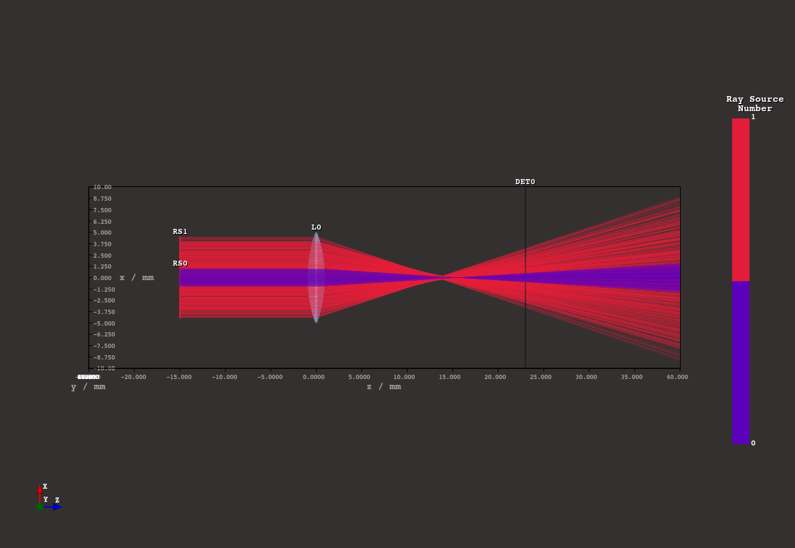
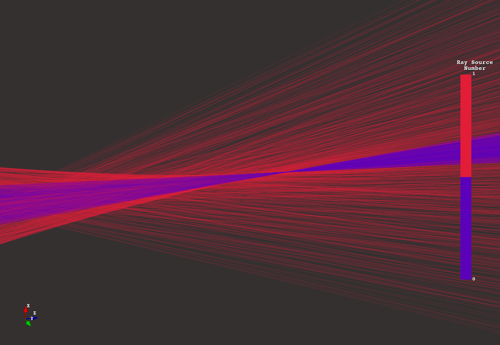

3. Quickstart#
The library comes with a variety of different example scripts that can be found in Section 5.
The
spherical_aberration.py script, also from this folder, provides a good quickstart introduction.Below you can find its code with detailed comments.
Before running make sure to follow the installation instructions in Section 2.
Further details on working with the raytracer and the frontend can be found in Section 4.
Code of examples/spherical_aberration.py:
#!/usr/bin/env python3
# ^-- the above line is called a shebang and is used in Unix systems
# to inform the caller which program he needs to call for this script to execute.
# This makes the file directly callable without the need to call python directly
# in this quickstart example we want to demonstrate some features of optrace
# the goal is to investigate the spherical aberration of a simple lens
# make sure the optrace library is installed in your system
# first we import the optrace package, as well as the gui
# gui and tracer are seperate so we don't have the overhead of multiple external libraries, even if they aren't needed
import optrace as ot
from optrace.gui import TraceGUI
# a Raytracer object provides the raytracing functionality and also controls the tracing geometry
# the outline parameter specifies a three dimensional box, in which all rays and geometry exists
# the values are specified as [x0, x1, y0, y1, z0, z1], with x1 > x0, y1 > y0 and z1 > z0
# all coordinates in the tracing geometry are specified in millimeters
RT = ot.Raytracer(outline=[-10, 10, -10, 10, -25, 40])
# all elements in the geometry (sources, lenses, detectors, ...) consist of Surfaces
# a Surface object describes a specific height behaviour depending on 2D coordinates relative to its center
# for the raysource we define a circle surface, which is perpendicular to the z-axis with a radius of 1
RSS0 = ot.CircularSurface(r=1)
# a raysource creates the rays for raytracing, it consists of a surface, a ray divergence behaviour,
# a specific light spectrum, a specific base orientation of the rays as well as a specific polarization
# in our case we want parallel light (divergence="None") parallel to the z-axis,
# which is specified by the orientation vector s=[0, 0, 1]
# the light spectrum is chosen as daylight spectrum D65, which can be found in the presets submodule
# the absolute position of its surface is controlled by the parent object, in this case the ray source,
# which is way it also needs to be provided
RS0 = ot.RaySource(RSS0, divergence="None", spectrum=ot.presets.light_spectrum.d65,
pos=[0, 0, -15], s=[0, 0, 1])
# after creation the element needs to be added to the tracing geometry
RT.add(RS0)
# we create a similar ray source, this time with a ring as surface
# a ring is basically a circle, with an inner circle with radius ri cut out
RSS1 = ot.RingSurface(r=4.5, ri=1)
RS1 = ot.RaySource(RSS1, divergence="None", spectrum=ot.presets.light_spectrum.d65,
pos=[0, 0, -15], s=[0, 0, 1])
RT.add(RS1)
# next we want to define a lens
# this lens should have a constant refraction index of 1.5,
# for this we define a RefractionIndex with mode "Constant" and a value of 1.5
# a RefractionIndex can have wavelength dependent behaviour specified by different functions,
# you can find examples somewhere else
n = ot.RefractionIndex("Constant", n=1.5)
# a lens consists of a front and back spherical surface
# for this we need a Surface with mode "Sphere", as before r specifies the maximum extent from the surface center
# R specifies the sphere curvature. For a biconvex lens the front has a positive curvature and the back a negative one
front = ot.SphericalSurface(r=5, R=15)
back = ot.SphericalSurface(r=5, R=-15)
# when creating the lens we need to provide both front and back surface
# there are multiple ways to provide the thickness property of the lens or rather the distance between surfaces
# in our case we provide de, which is a thickness extension between front and back surface
# this means there is a spacing of de=0.2mm between the end of the front surface and the start of the back surface
# the position pos is then exactly in the middle of these 0.2mm
# we also need to provide the refraction index from before
L = ot.Lens(front, back, de=0.2, pos=[0, 0, 0], n=n)
RT.add(L)
# a detector is used to render images inside the raytracer
# as the source in consists of a single surface
# in our case we want a rectangular detector with side lengths 20mm
# for this we define a Surface with mode "Rectangle" and a dim vector of [20, 20]
DETS = ot.RectangularSurface(dim=[20, 20])
# a detector takes a surface and a position
DET = ot.Detector(DETS, pos=[0, 0, 23.])
RT.add(DET)
# we now have a tracing geometry, but no tracing has taken place
# we could trace the geometry by calling RT.trace(N) with N being the number of rays
# but we also can create a GUI instance, that does this for us as well as providing a
# graphical frontend with an interface to different functionality
# TraceGUI object is needed, that takes the raytracer as parameter
# additional parameters can provide graphical settings
# for example, we want the rays to be colored according to their source number,
# this is done by color_type="Source"
# and we want a higher ray opacity
sim = TraceGUI(RT, coloring_type="Source", ray_opacity=0.2)
# the frontend is created, but we need to start it explicitly for it to run
sim.run()
# You can now experiment with different features, e.g.
# 1. navigate in the three dimensional geometry
# 2. click on intersections of rays with a surface to see ray properties
# 3. play around with ray visual settings in the main tab
# 4. generate some detector images (Imaging-Tab), you can move the detector for this
# 5. find the focus for each of the two sources.
# In the "Focus" Tab select "Rays From Selected Source Only" and click on "Find Focus" Button.
# Select the other ray source and see that the focus positions differ
# consult the documentation to see an explanation on the GUI features
Screenshots
{kind=link}

{kind=link}
